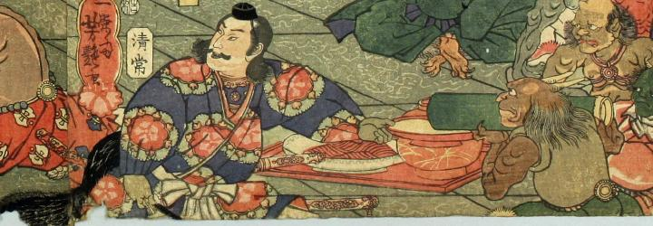

鬼の舞いを見物する碓井貞光に竹筒の酒をつぐ鬼。肌は浅黒く、2本の角を持ち、手指の爪は長い。袖のない灰色の上着と緑色の袴を身につけ、腰紐を結んでいる。髪を背中に垂らしている。
著作者：一栄斎芳艶（歌川芳艶）／出典：親書誌：U426_nichibunken_0086：丹波國大江山之圖；タンバノクニオオエヤマノズ／日付：2007／資源識別子：U426_nichibunken_0086_0005_0003
Copyright (c)2010- International Research Center for Japanese Studies, Kyoto, Japan. All rights reserved.